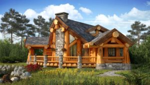
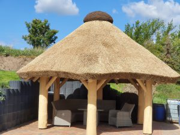
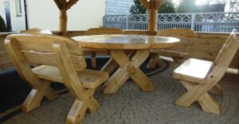

Naturstammhaus, Holzhaus, Gartenpavillon, Gartenmöbel Holz Rustikal, Blockstammhaus aus handgefertigten Naturholzstämmen aus Polen nur bei Naturstammhaus.Online
Naturstammhaus, Gartenpavillon, Gartenmöbel, Blockstammhaus, Holzhaus aus Holzstämmen besteht aus handgefertigten Naturholzstämmen aus Polen nur bei Naturstammhaus.Online
Sehen Sie Filme aus unseren Projekten
Haus aus Holzstämmen
Der Bau von Häusern aus Holzbalken wird unter Berücksichtigung der individuellen Merkmale der zukünftigen Konstruktion vorgenommen.
Weiterlesen

Haus aus Holzstämmen

Gartenpavillon mit Reetdach aus Polen in Schönebeck
Gartenpavillon mit Reetdach aus Polen
Lasen Sie sich überzeugen und schauen Sie weiter. Wunderschöne Pavillon aus Natur Stammholz und da zu Bedecken mit Reetdach. Das Qualität ist unsere Domäne
Weiterlesen
Gartenmöbel aus Polen
Das Wunderschöne Gartenmöbel bieten wir an. Rund oder rechteckig Rustikal aus Holz. Die beste Verarbeitung und Qualität. Lasen Sie sich überzeugen
Weiterlesen

Gartenmöbel rund Rustikal aus Polen